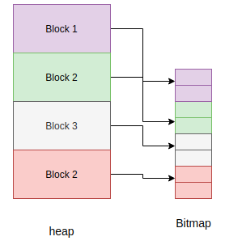

การจัดการหน่วยความจำ¶
ต่างจากภาษาโปรแกรมอย่าง C/C++ MicroPython ซ่อนรายละเอียดการจัดการหน่วยความจำจากนักพัฒนาโดยรองรับการจัดการหน่วยความจำอัตโนมัติ การจัดการหน่วยความจำอัตโนมัติเป็นเทคนิคที่ใช้โดยระบบปฏิบัติการหรือแอปพลิเคชันเพื่อจัดการการจัดสรรและการคืนหน่วยความจำโดยอัตโนมัติ ซึ่งช่วยขจัดปัญหาต่างๆ เช่น การลืมคืนหน่วยความจำที่จัดสรรให้กับออบเจกต์ นอกจากนี้การจัดการหน่วยความจำอัตโนมัติยังหลีกเลี่ยงปัญหาสำคัญของการใช้งานหน่วยความจำที่ได้รับการคืนไปแล้ว การจัดการหน่วยความจำอัตโนมัติมีหลายรูปแบบ หนึ่งในนั้นคือการเก็บขยะ (GC)
ตัวเก็บขยะมักมีหน้าที่รับผิดชอบสองประการ ได้แก่
จัดสรรออบเจกต์ใหม่ในหน่วยความจำที่ว่างอยู่
คืนหน่วยความจำที่ไม่ได้ใช้งาน
มีอัลกอริทึม GC หลายรูปแบบ แต่ MicroPython ใช้นโยบาย Mark and Sweep สำหรับการจัดการหน่วยความจำ อัลกอริทึมนี้มีระยะการทำเครื่องหมาย (mark phase) ที่ท่องผ่านฮีปเพื่อทำเครื่องหมายออบเจกต์ที่ยังมีชีวิตอยู่ทั้งหมด ในขณะที่ระยะการกวาด (sweep phase) จะท่องผ่านฮีปเพื่อเรียกคืนออบเจกต์ที่ไม่ได้ทำเครื่องหมายทั้งหมด
ฟังก์ชันการเก็บขยะใน MicroPython มีให้ใช้งานผ่านโมดูลในตัว gc:
>>> x = 5
>>> x
5
>>> import gc
>>> gc.enable()
>>> gc.mem_alloc()
1312
>>> gc.mem_free()
2071392
>>> gc.collect()
19
>>> gc.disable()
>>>
แม้ว่าจะมีการเรียก gc.disable() แต่ก็ยังสามารถเรียกใช้การเก็บขยะได้ด้วย gc.collect()
หน่วยความจำ MicroPython จากโค้ด C¶
จำเป็นต้องมีความเข้าใจเกี่ยวกับตัวเก็บขยะเมื่อเขียนโค้ด C ที่จัดสรรหน่วยความจำจาก "Python heap" (เช่น ฟังก์ชัน m_malloc(), m_malloc0(), m_free() เป็นต้น)
ระยะการทำเครื่องหมายของตัวเก็บขยะจะสแกนหาพอยน์เตอร์ที่ยังมีชีวิตไปยังหน่วยความจำฮีป โดยเริ่มจากรากต่อไปนี้:
สแตกของ Python runtime หลัก (หรือ REPL)
สแตกของ "Python thread" แต่ละตัว สำหรับพอร์ตที่รองรับ Python threads บนเธรดหรือทาสก์ของระบบปฏิบัติการเนทีฟ
"root pointers" ที่กำหนดในโค้ด C โดยใช้มาโคร
MP_REGISTER_ROOT_POINTERนี่คือวิธีที่แนะนำสำหรับการมีพอยน์เตอร์แบบ static scope ไปยัง Python heapการจัดสรรที่ติดตามด้วยฟังก์ชัน
m_tracked_calloc(),m_tracked_reallocและm_tracked_free()ฟังก์ชันพิเศษเหล่านี้ช่วยให้สามารถจัดสรรบล็อกหน่วยความจำที่ตัวเก็บขยะถือว่ายังมีชีวิตอยู่เสมอ คล้ายกับการจัดสรรหน่วยความจำใน C หน่วยความจำนี้จะถูกคืนเมื่อเรียกm_tracked_free()หรือเมื่อทำ soft reset เท่านั้น การจัดสรรที่ติดตามแต่ละครั้งมีค่าใช้จ่ายด้านหน่วยความจำและ runtime เล็กน้อย คุณลักษณะนี้ไม่ได้เปิดใช้งานโดยค่าเริ่มต้นในทุกพอร์ต
จากนั้นตัวเก็บขยะจะสแกนและทำเครื่องหมายหน่วยความจำทั้งหมดที่ถูกชี้โดย root pointers แบบวนซ้ำ จนกว่าที่อยู่ทั้งหมดจะหมดสิ้น ซึ่งเพียงพอที่จะค้นหาออบเจกต์ Python ทั้งหมดที่ยังถูกใช้งานโดย MicroPython runtime
อย่างไรก็ตาม หน่วยความจำต่อไปนี้จะ ไม่ ถูกสแกนโดยตัวเก็บขยะและอาจถูกคืนก่อนเวลา:
ตัวแปร C แบบ static หรือ global ที่มีพอยน์เตอร์ไปยังหน่วยความจำฮีป
พอยน์เตอร์ที่ไม่ได้ชี้ไปยัง "head" ของบัฟเฟอร์ที่จัดสรร (เช่น ที่อยู่ที่
m_malloc()คืนค่ามาแน่นอน) แต่ชี้ไปยังที่อยู่ภายในบัฟเฟอร์ที่จัดสรร (เช่น พอยน์เตอร์ไปยัง struct ที่ซ้อนกัน) ด้วยเหตุผลด้านประสิทธิภาพ ตัวเก็บขยะจะไม่ทำเครื่องหมายบัฟเฟอร์ที่ครอบคลุมในกรณีเหล่านี้สแตกของเธรดหรือทาสก์ RTOS ที่ไม่ได้รันโค้ด Python หรือไม่ได้ลงทะเบียนด้วยตนเองเป็น "Python thread" (สำหรับพอร์ตที่รองรับเธรดหรือทาสก์เนทีฟ)
วิธีหลีกเลี่ยง use-after-free ในสถานการณ์เหล่านี้:
ใช้ API การจัดสรรที่ติดตาม
m_tracked_calloc(),m_tracked_realloc()และm_tracked_free()ลงทะเบียน root pointer (ดูด้านบน) แทนการเก็บพอยน์เตอร์ไว้ในตัวแปร static
ปรับโครงสร้างโค้ดใหม่ เช่น โดยการมี API ที่โค้ด Python กำหนดค่าเริ่มต้นให้ singleton Python object (ที่ implements ใน C) ซึ่งเก็บพอยน์เตอร์ที่เกี่ยวข้องทั้งหมดแทนที่จะเก็บไว้ในตัวแปร static
Note
รีเซ็ตแบบซอฟต์ จะล้าง Python heap และคืนหน่วยความจำทั้งหมดเสมอ สิ่งสำคัญคือต้องไม่เก็บพอยน์เตอร์ใดๆ ไปยังฮีปหลังจาก soft reset เนื่องจากพอยน์เตอร์เหล่านั้นจะกลายเป็น dangling pointers ไปยังหน่วยความจำที่คืนแล้ว
บางพอร์ตรองรับ "C heap" ด้วยเช่นกัน (ดู การจัดสรรหน่วยความจำแบบไดนามิก C) ซึ่งในกรณีนี้คุณสามารถจัดสรรหน่วยความจำที่จะยังคงใช้งานได้หลัง soft reset โดยการเรียกฟังก์ชัน C มาตรฐาน เช่น malloc เป็นต้น
โมเดลออบเจกต์¶
ออบเจกต์ MicroPython ทั้งหมดอ้างอิงด้วยชนิดข้อมูล mp_obj_t โดยปกติจะมีขนาดเท่ากับ word (เช่น ขนาดเดียวกับพอยน์เตอร์บนสถาปัตยกรรมเป้าหมาย) และโดยทั่วไปอาจเป็น 32 บิต (STM32, RP2, nRF, Unix x86) หรือ 64 บิต (Unix x64) นอกจากนี้ยังอาจมีขนาดใหญ่กว่า word สำหรับการแสดงออบเจกต์บางประเภท เช่น OBJ_REPR_D มี mp_obj_t ขนาด 64 บิตบนสถาปัตยกรรม 32 บิต
mp_obj_t แทนออบเจกต์ MicroPython เช่น จำนวนเต็ม ทศนิยม ชนิด dict หรือ instance ของคลาส ออบเจกต์บางชนิด เช่น boolean และจำนวนเต็มขนาดเล็ก จะเก็บค่าไว้โดยตรงใน mp_obj_t และไม่ต้องการหน่วยความจำเพิ่มเติม ส่วนออบเจกต์อื่นๆ เก็บค่าไว้ที่อื่นในหน่วยความจำ (เช่น บนฮีปที่ใช้ GC) และ mp_obj_t จะมีพอยน์เตอร์ไปยังหน่วยความจำนั้น ส่วนหนึ่งของ mp_obj_t คือแท็กที่บอกประเภทของออบเจกต์
ดู py/mpconfig.h สำหรับรายละเอียดเฉพาะของการแสดงผลที่ใช้ได้
การติดแท็กพอยน์เตอร์
เนื่องจากพอยน์เตอร์จะถูก word-aligned เมื่อเก็บไว้ใน mp_obj_t บิตล่างของ object handle นี้จะเป็นศูนย์ ตัวอย่างเช่น บนสถาปัตยกรรม 32 บิต บิตสองบิตล่างสุดจะเป็นศูนย์:
********|********|********|******00
บิตเหล่านี้สงวนไว้เพื่อจุดประสงค์ในการเก็บแท็ก แท็กเก็บข้อมูลเพิ่มเติมแทนที่จะเพิ่มฟิลด์ใหม่เพื่อเก็บข้อมูลนั้นในออบเจกต์ ซึ่งอาจไม่มีประสิทธิภาพ ใน MicroPython แท็กจะบอกว่าเรากำลังจัดการกับจำนวนเต็มขนาดเล็ก สตริงที่ถูก interned (สตริงเล็ก) หรือออบเจกต์จริง และมีความหมายที่แตกต่างกันสำหรับแต่ละประเภทนี้
สำหรับจำนวนเต็มขนาดเล็ก การ mapping คือ:
********|********|********|*******1
โดยที่เครื่องหมายดอกจันเก็บค่าจำนวนเต็มจริง สำหรับ interned string หรือ immediate object (เช่น True) เลย์เอาต์ของค่า mp_obj_t ตามลำดับคือ:
********|********|********|*****010
********|********|********|*****110
ส่วนออบเจกต์จริงที่ไม่ใช่ประเภทข้างต้นจะมีรูปแบบ:
********|********|********|******00
ดาวที่นี่สอดคล้องกับที่อยู่ของออบเจกต์จริงในหน่วยความจำ
การจัดสรรออบเจกต์¶
ค่าของจำนวนเต็มขนาดเล็กจะเก็บโดยตรงใน mp_obj_t และจะถูกจัดสรรในตำแหน่งนั้น ไม่ใช่บนฮีปหรือที่อื่น ดังนั้น การสร้างจำนวนเต็มขนาดเล็กจึงไม่ส่งผลต่อฮีป เช่นเดียวกันสำหรับ interned strings ที่มีข้อมูลข้อความเก็บไว้ที่อื่นแล้ว และค่า immediate เช่น None, False และ True
ทุกสิ่งทุกอย่างที่เป็นออบเจกต์จริงจะถูกจัดสรรบนฮีป และโครงสร้างออบเจกต์นั้นเป็นเช่นนั้นที่ฟิลด์หนึ่งถูกสงวนไว้ใน object header เพื่อเก็บประเภทของออบเจกต์
+++++++++++
+ +
+ type + object header
+ +
+++++++++++
+ + object items
+ +
+ +
+++++++++++
หน่วยการจัดสรรที่เล็กที่สุดของฮีปคือบล็อก ซึ่งมีขนาดสี่ machine words (16 ไบต์บนเครื่อง 32 บิต, 32 ไบต์บนเครื่อง 64 บิต) โครงสร้างอื่นที่ถูกจัดสรรบนฮีปด้วยจะติดตามการจัดสรรออบเจกต์ในแต่ละบล็อก โครงสร้างนี้เรียกว่า bitmap

bitmap ติดตามว่าบล็อกนั้น "ว่าง" หรือ "กำลังใช้งาน" และใช้สองบิตเพื่อติดตามสถานะนี้สำหรับแต่ละบล็อก
ตัวเก็บขยะแบบ mark-sweep จัดการออบเจกต์ที่จัดสรรบนฮีป และยังใช้ bitmap เพื่อทำเครื่องหมายออบเจกต์ที่ยังอยู่ในการใช้งาน ดู py/gc.c สำหรับการ implements รายละเอียดเหล่านี้ทั้งหมด
การจัดสรร: เลย์เอาต์ฮีป
ฮีปถูกจัดเรียงให้ประกอบด้วยบล็อกในพูล บล็อกสามารถมีคุณสมบัติที่แตกต่างกัน:
ATB(allocation table byte): ถ้าตั้งค่า แสดงว่าบล็อกนั้นเป็นบล็อกปกติ
FREE: บล็อกว่าง
HEAD: หัวของห่วงโซ่บล็อก
TAIL: อยู่ในส่วนหางของห่วงโซ่บล็อก
MARK : บล็อกหัวที่ถูกทำเครื่องหมาย
FTB(finaliser table byte): ถ้าตั้งค่า แสดงว่าบล็อกนั้นมี finaliser